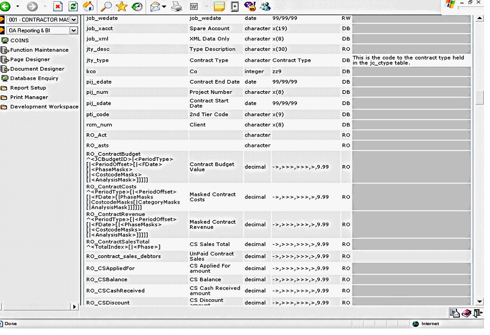

In addition to the standard tables and fields in the

Although these fields have certain restrictions, they are incredibly powerful when used in
In most instances RO_ fields will provide information from related tables to the main queried table - for example, summary cost information at
Many of the calculated fields reflect similar fields to the coins + Configurable Reporter, such as Accruals, Costs and Revenue fields. These fields can then be passed parameters to enhance the information returned to a report. Typically these fields can be limited by dates, values and
In the Database
RO_ContractCosts^<PeriodType>[|<PeriodOffset>[|<FDate>[|PhaseMasks[|CostcodeMasks[|CategoryMasks[|AnalysisMask]]]]]
There are certain restrictions on the use of RO fields, especially in relation to sorting and filtering. Details of these restrictions are covered in the appropriate documents.